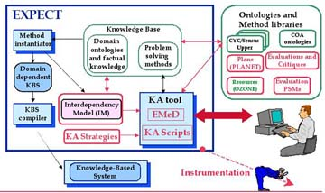

Welcome to the EXPECT Project!
EXPECT is an environment for developing knowledge-based systems that includes knowledge acquisition tools to extend and modify knowledge bases.

See a Quicktime about the EXPECT project.
For more information about EXPECT, send mail to expect@isi.edu.
About EXPECT |
Research | Project Members | Publications | Movie |
| Intelligent Systems
Division | Information Sciences
Institute | USC |